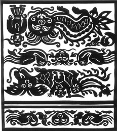

剪纸：苗语称“榜细”。剪纸是台江县苗族民间工艺美术之一，为县境苗族各种刺绣的底样、蓝本和第一道工序。经过第二次加工后，剪纸的艺术性就在刺绣上表现出来。因此，剪纸艺术是县境苗族刺绣和服饰的重要组成部分。

县境苗族民间剪纸，可分为方囊、方你两型。分述两者的特点与风格于下。方囊型：方囊剪纸供平绣用。平绣线如细发，平平铺展，平面构图，不象湘绣那样有明暗层块的立面构图，因此剪纸注重轮廓线，外轮廓剪空，内轮廓只剪破，要锁边的同样剪空。锁边以景泰兰金丝镶边，因而很注重锁边的轮廓线变化，以线条来体现立面，力求用几根线条勾出形象的姿态。简略锁碎的细部，其中以涡形云纹线及齿形曲线运用最巧妙和普遍。涡形云纹线多用于动物肢体连接、须、尾。齿形曲线多用于毛、尾、冠。这两种线规范化，具有概括力及节奏感，富有韵味，增强了装饰效果。变形与夸张是方囊型剪纸的魅力之一。动物的尾巴可以长出一支花；人物头身可以不成比例，口和某种动物的嘴一样，还可以长出鱼的两根须；象的头上可以长出牛角；某种野兽可以只长两只脚……，变形与夸张舍去了解剖学的精确，使形象具有灵活性及视觉美感。方囊型剪纸中有一种特别的造型形式，即圆型形式，不管什么动物，取头的正面居中，只取两只脚居左右与圆型的身体包裹着头。 方囊型剪纸构图形式大体可分为以下五种：
（1）中心式：这种构图用于整幅的袖腰剪纸，一般以一大形动物居画面中心占大部面积，动物上常配以人物。出现的动物有象、狮、虎、龙牛、龙、马。四周以蝶、鱼、鸟、鼠、兔、鹿等为小纹样相配。
（2）中心对称式：这种构图用于三接式组合的袖腰，前已叙过。
（3）左右式：这种构图多用于二接式袖腰，左右各一个动物，势态取侧面。也有左右对称形式。
（4）整体式：这种构图多用于三接式袖腰，也有用于二接式袖腰。主体形象由一动物与人组成或单独一动物，横续画面。 （5）花边式：这种构图由许多单个动物并列一排，纹样细小，线条更简练。
（6）米字式：这种构图用于围腰。中心为一菱形框，上下取菱形边线平行线二、三道组成 形框，菱形中布一动物。 形框中象花边那样平列布以动物，左右上下可对称，也可不完全对称。
方你型：方你型剪纸的内轮廓以针打眼成虚线，他主要用于辫绣（也有用于平绣）。辫绣先用入根丝线编成小辫带，再把辫带按剪纸图案盘结而成，有点相似现代绒绣的堆积效果。因此方你型剪纸注重外轮廓线的势态，简化复杂结构，省略细部，有剪影味，不搞细小纹样，采用大幅面，构图求简生繁。选题比方囊形窄，常出现的动植物有：龙、锦鸡、蝴蝶、蝙蝠、鱼、猫、牡丹、石榴、葫芦、棉花、桃、没有人物。其中龙的图案变化最为丰富多彩。 方你型剪纸构图形式有四种：
（1）龙的构图：以一龙或数龙盘曲于中，边配以糊蝶、石榴、猫、鹿、花或以二龙左右对称，中间设有一圆宝，四周配花饰。
（2）花鸟构图：整个画面以环构成框架，环内外填配石榴、葫芦、鱼、虾、龙、蛙、花等。环有四连环、五连环、六连环、七连环等。
（3）桃形构图：以一桃居中，左右加一叶构成框架，框为外配以花木动物，是环的变象。
（4）蝶、蝠构图：以一只蝴蝶或蝙蝠布满画面，左右对称以肢的轮廓线构成环框，在框内外配以花木。
县境苗族剪纸构图文饰，随着社会生活的变化，不断地注入新的内容。但由于传统基础厚实，被注进来的内容，都被传统作艺术加工，沿着民族特色，装饰价值和欣尝价值的轨迹发展。这是县境苗族剪纸艺术在任何时代都保持其强胜的生命力的表现。在苗族服饰图案语言里，如上所述的记录着缅怀祖先的创世图案、祭祀图案和记载先民悲壮历史的战争迁徙图案，这些图案中所表现的都是与人们生活密切相关的自然实物，虽然有一定的寄意指南，但都是实实在在的客观作载体，没有那种神奇怪异的超实臆造物。渔猎时期人们追捕的对象为禽、兽、鱼、两栖类生物；所见的自然景观是日、月、山、川及春华秋实。多用形象的现实手法进行描绘。农耕时期人们对植物的观察较之过去尤为注重能从自然景观中概括出线条的素描，几何纹饰逐渐代替象形的描绘，如方白型的蕨茶纹，就连影响最大历史最悠久，被各民族中视为龙物的“龙”，造型日趋写实，力求精细逼真，咄咄逼人，可是苗族就可应用到衣物各个部份。苗族没有凤的概念，据说这是因为苗族祖先蚩尤部落以龙为图腾。苗族取代凤为鸟，这叫“ 宇鸟”。它替蝴蝶孵化出12个蛋，所以鸟被认为苗族远祖之一。台江县境内各型服饰采用鸟纹很普遍，织锦的中心纹样多是鸟造形和雉相像。苗族中有巫师与公鸡在一起的纹样，有时公鸡被描绘成双头，巫师则骑在双头鸡上。再是传说蝴蝶妈妈是由枫树心变的，它居于枫树之上，这图案被苗家人视若神灵，再造人类。这富于神话色彩的图案追溯了苗族先民从母系发展至父系时代的社会历史。
再是迁徙历史的记载，古农耕文化的再现有“田园纹”“江河纹”“渔业纹”，如嘎东型在裙中挑绣的“江河纹”三道纹路，便是苗族迁徙的印证。它是南国水乡绿色，是苗家祖先开创之地，是苗家生息繁衍的发祥圣地，是苗家世代儿孙永远怀念的地方。
服饰图纹的演变，也反映出民族文化的进程的一方面。由于民族意识的内向性和文化传统的继承性，以及人们的不同的审美观著诸多因素的作用，在现实生活中人们仍保留着写实的手法，也有写实与寓意相结合的。